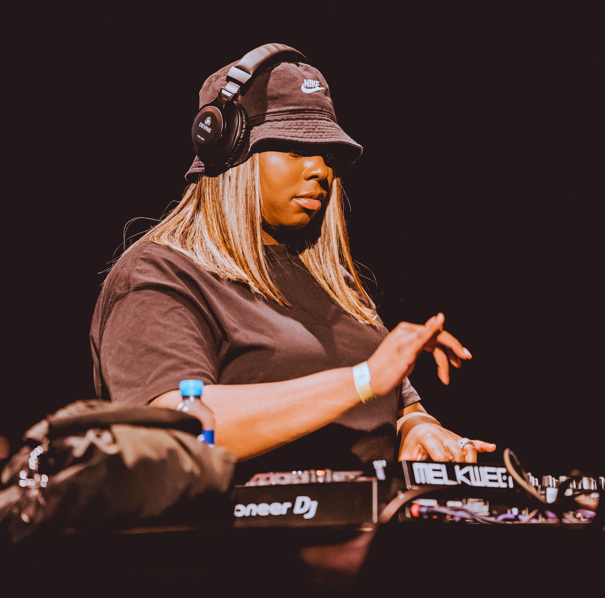
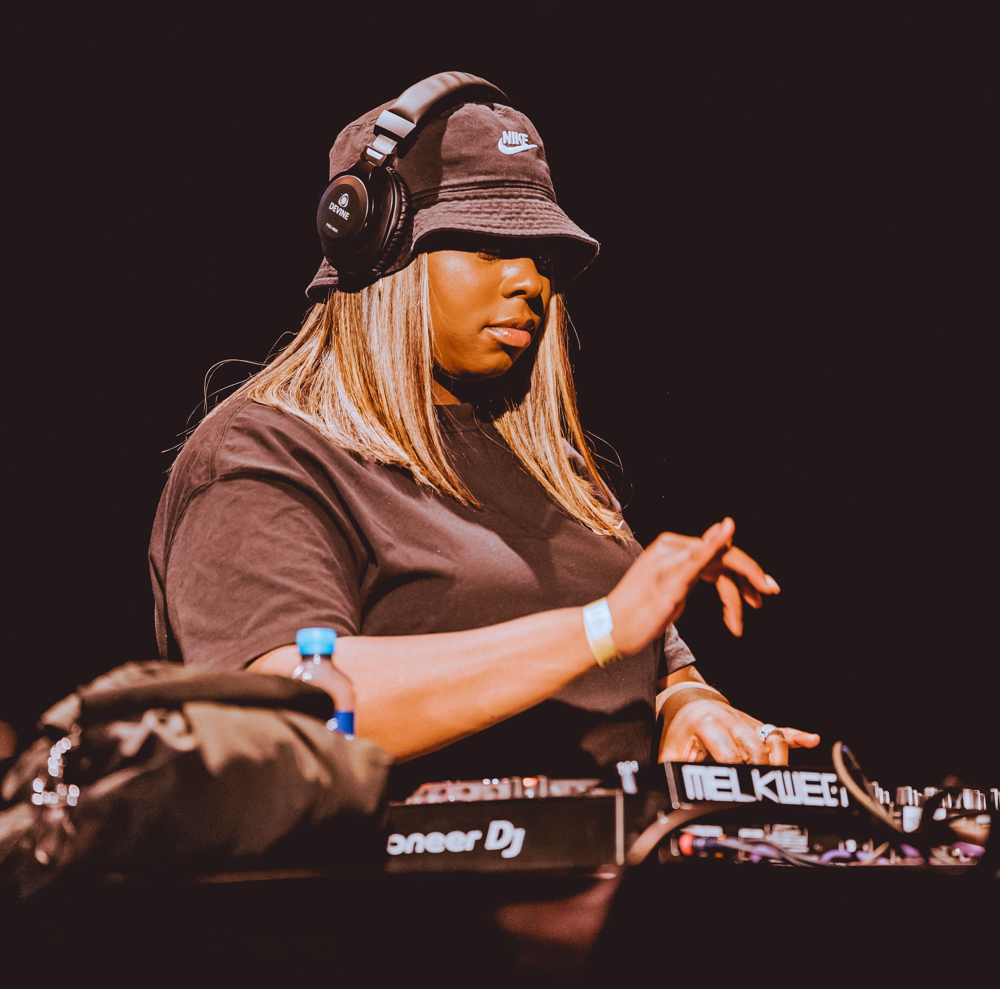

YOUNG CREATIVES
Wij bieden je de mogelijkheid je te ontwikkelen als maker, artiest of ondernemer en je weg te vinden in de Nederlandse kunst- en cultuursector. Het maakt niet uit of je nu net begint of al enige tijd meegaat, je op zoek bent naar nieuwe inspiratie of een nieuw netwerk, we bieden het allemaal! Lees hier meer over onze programma's, samenwerkingen en trajecten:

WAT IS DIE MO
Wat is die Mo? zijn meet-ups voor young creatives die het willen maken of willen werken in de muziekscene. Bij dit programma krijg je ...

MILK MADE
Milk Made is er voor jongeren (18-25 jaar) die in de creatieve sector willen werken, vóór of achter de schermen. Hierbij is motivatie belangrijker da...
MELKWEG RADAR
De nieuwe Sophie Straat, S10 of Ploegendienst ontdekken? Bij Melkweg RADAR ontvangen we de nieuwste acts van het moment - genrebreed ...
YOUNG CREATIVES CLUB
De zalen van de Melkweg transformeren meerdere nachten per week tot een stampendhete club, waar je tot diep in de nacht ...

YOUNG CREATIVES EXPO
Melkweg Expo is een expositieruimte voor vernieuwende, hedendaagse fotografie en een platform voor jonge kunstenaars. We bieden ee...
YOUNG CREATIVES MUSIC
Opkomende makers staan centraal bij alles wat we doen. Is muziek helemaal jouw ding? Wil je zelf aan de slag, of meer weten over de ...
COMMUNITY
Op deze pagina vind je de verhalen van onze Young Creatives en de mensen achter de schermen waar we mee werken. Er werken bij d...

YOUNG CREATIVES FILM
In de nok van ons gebouw vindt je de allerfijnste bioscoopzaal van Amsterdam: Melkweg Cinema - dé plek in Nederland waar je muziekfilms in de ...
YOUNG CREATIVES BOARD
Ons Young Creatives Board bestaat uit acht jonge mensen die ons door middel van brainstorms en bijeenkomsten adviseren en ...

ONDERWIJS
Kunst en cultuur verbindt. Wij vinden het belangrijk om jonge mensen te laten ervaren hoe het is om muziek te luisteren, een expositie op j...
.png)
STAGES
Bij de Melkweg kun je op verschillende afdelingen stage lopen. Het is een unieke plek, met meerdere concertzalen, een cinema en een ...
PITCH JE PLAN!
Bij ons staan de deuren wagenwijd open voor visionaire programmamakers zoals jij! We zijn voortdurend op zoek naar nieuwe en ...
WO 22 NOV
CINERADAR #6
Melkweg x Cineville x Vers - Nieuw Nederlands Filmtalent
Korte films

OVER MELKWEG YOUNG CREATIVES
Melkweg is al decennia een plek voor experiment. Bij ons mogen subculturen zich thuis voelen en krijgt de groei van makers een plek. Creatieve jongeren zijn vernieuwers en hebben een frisse blik op de maatschappij. We leren graag van de belevingswereld en visie van jonge (Amsterdamse) makers - om on top of our game te kunnen blijven, om onze blik te verruimen, onze meningen te herzien, ideeën uit te wisselen en om ruimte te maken. Zo creëren we een plek waar iedereen zich welkom, gerepresenteerd en gehoord voelt. Door middel van peer to peer-educatie en coaching gericht op professionele ontwikkeling kunnen jonge makers van elk leerniveau bij ons hun eigen professionele ideeën verder uitwerken en uittesten. Op deze manier dragen we bij aan de leercurve van deze creatieve jongeren. Dit wordt mede mogelijk gemaakt dankzij een bijdrage van het Cultuurfonds.

.jpg) 
